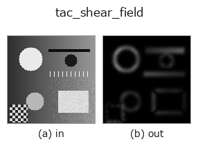

tactile op• 数据种类:image → image
• 调用:fullseye.apply(img, "tac_shear_field", a=0.5, b=0.5)(2-D 的模型是一张图 + 两个标量旋钮 a,b∈[0,1])

*图为在 128×128 合成输入上实际运行的输出。左为输入，右为输出。点云以俯视散点显示(亮度 = z)，一维序列为折线，体数据为沿 z 的最大值投影，视频为中间帧，复数图像为幅值；无法成像的返回值直接显示数值。*
扫描旋钮 a(0.1 / 0.5 / 0.9，另一旋钮取默认):
▸ tac_shear_field: knob a sweep (docs site)
扫描旋钮 b(0.1 / 0.5 / 0.9，另一旋钮取默认):
▸ tac_shear_field: knob b sweep (docs site)
换别的图像(合成场景 / 照片 / 硬币。上排为输入，下排为对应输出。旋钮取默认):
▸ tac_shear_field: other inputs (docs site)
*第 4 列是彩色 (H,W,3) 输入。此算子能正确处理颜色而不跨通道(不把颜色通道当作第三个空间轴卷积)。*
由二维结构张量(Foerstner / Bigun-Granlund 方向一致性)求面内剪切(in-plane shear)近似。张量 `J = G_sigma(grad v * grad v^T) 的特征值为 l1 >= l2,一致性 (l1-l2)/(l1+l2) = sqrt((J11-J22)^2 + 4*J12^2) / (J11+J22) 在凝胶纹理被拉伸成单一主方向时(如在切向/剪切载荷下)为 1,在各向同性时为 0。结果还会乘以张量迹(梯度能量)作为权重,以使无纹理、未接触的凝胶保持暗色,而不会放大噪声方向。a = 张量积分 sigma(0.6~4.6),b` = 输出增益(0.5~2.5)。输出裁剪到 [0,1],大小为 HxW;常数帧的梯度能量为零,得到全零的剪切场。
• 示例数据目录(下载 URL / 许可证) —— 2-D 用 skimage.data(BSD/公有领域)加合成图,3-D 给出真实数据源(Stanford/PDS 等)的下载 URL。
• 算子来历与参考文献 —— 该算子族所依据的研究/方法出处。
下面的程序已确认可以运行(与图相同的输入)。在 Studio 帮助中，此块会变成按钮，可当场加载并运行。
tac_shear_field 0.50 0.50
▸ Load this pipeline · Load & run
• sim2real_and_alife — py -3.11 examples/sim2real_and_alife.py
image 作为输入)identity · gaussian · mean_box · bilateral · unsharp · median · min_filter · max_filter
tactile)tac_contact_mask · tac_height_from_shading · tac_surface_normal · tac_pressure_proxy
*Provenance: ops.py — 2D 算子登记表。本条目由 tools/opdocs.py md 自动生成(请勿手工编辑)。*
© 2026 Kazufumi Furuse — Fullseye operator documentation. Licensed under Apache-2.0.
{kind=link}
{kind=link}
{kind=link}